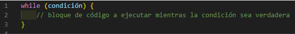

- BUCLES EJ JS
Un bucle, en programación, es una estructura que permite ejecutar un bloque de código repetidamente hasta que se cumpla una condición específica. Los bucles son fundamentales en la programación porque permiten automatizar tareas que requieren repetición.
- EN JAVASCRIPT
en JavaScript es una estructura que permite ejecutar un bloque de código repetidamente mientras se cumpla una condición específica.
Existen distintos tipos de bucles, En cada tipo de bucle, la condición se evalúa antes de cada iteración, y si es verdadera, el bloque de código se ejecuta. Una vez que la condición se evalúa como falsa, el bucle termina y la ejecución del programa continúa después del bucle. Los bucles son una parte fundamental de JavaScript y se utilizan ampliamente para tareas como la iteración sobre arreglos, la lectura de datos de entrada, y la repetición de procesos hasta que se cumplan ciertas condiciones.
1.- WHILE
2.- DO WHILE
3.- FOR
4.- FOR...IN
5.- FOR...OF
- DEFINIENDO BUCLES
1.- WHILE
El bucle while es una estructura de control que se utiliza para repetir un bloque de código mientras una condición específica sea verdadera. Esto significa que el bloque de código se ejecutará repetidamente mientras la condición sea evaluada como verdadera. Una vez que la condición se evalúa como falsa, la ejecución del bucle se detiene y el programa continúa con la siguiente instrucción después del bucle.
SINTAXIS

La palabra clave while indica el inicio del bucle.
La condición es una expresión booleana que se evalúa antes de cada iteración del bucle. Si la condición es verdadera, el bloque de código dentro del bucle se ejecuta. Si la condición es falsa, el bucle se detiene y la ejecución continúa con el código después del bucle.
El bloque de código entre llaves {} es el cuerpo del bucle, que contiene las instrucciones que se ejecutan repetidamente mientras la condición sea verdadera.
El bucle while en JavaScript es como un reloj que sigue funcionando mientras cierta condición sea verdadera. Imagina que estás esperando el autobús: mientras no llegue, sigues esperando. Pero una vez que llega, dejas de esperar y te subes al autobús. El bucle while funciona de manera similar.
- EJEMPLO DE WHILE

En este ejemplo::
Establecer la condición: Antes de comenzar el bucle, debes decirle a JavaScript cuándo debe parar de ejecutarlo. Esto se hace estableciendo una condición entre paréntesis después de la palabra clave while. Por ejemplo, contador <= 5 es una condición que significa "continuar ejecutando el bucle mientras el contador sea igual o menor que 5".
El cuerpo del bucle: Dentro de las llaves {}, escribes las instrucciones que deseas que se repitan. Esto puede ser cualquier cosa: imprimir mensajes, realizar cálculos, etc. Estas instrucciones se ejecutarán una y otra vez mientras la condición siga siendo verdadera.
Actualización de la condición: Es importante asegurarse de que la condición eventualmente cambie para evitar que el bucle se ejecute infinitamente. Esto se hace típicamente dentro del cuerpo del bucle. En nuestro ejemplo, usamos contador++ para incrementar el contador en 1 en cada iteración.
Salir del bucle: Una vez que la condición se evalúa como falsa, el bucle se detiene y la ejecución del programa continúa con la primera línea de código después del bucle while.
El bucle while es una herramienta poderosa para ejecutar código repetitivo basado en una condición específica. Sin embargo, debes tener cuidado de asegurarte de que la condición se vuelva falsa en algún momento para evitar que el bucle se ejecute para siempre.
De esto hablaremos mas adelante - DO WHIILE
El bucle do-while es una estructura de control iterativa que ejecuta un bloque de código al menos una vez y luego repite la ejecución del bloque mientras se cumpla una condición específica.
SINTAXIS

DONDE:
Evaluación inicial: El bloque de código dentro del bucle se ejecuta primero, sin importar la condición.
Evaluación de la condición: Después de ejecutar el bloque de código, se evalúa la condición especificada en el while.
Repetición del bucle: Si la condición es verdadera, el bloque de código se ejecuta nuevamente. Este proceso se repite hasta que la condición sea falsa.
Salida del bucle: El bucle do-while termina cuando la condición especificada se evalúa como falsa.
El bucle do-while es útil cuando necesitas ejecutar un bloque de código al menos una vez, independientemente de si la condición es verdadera o falsa al principio. Por ejemplo, puede ser útil para solicitar al usuario que ingrese datos al menos una vez, y luego continuar solicitando datos mientras se cumpla una condición específica.
EJEMPLO DE BUCLE DO WHILE

Ahora vamos a explicarlo
Imagina que estás creando un programa que necesita que el usuario ingrese un número mayor que 10. Para garantizar que el programa funcione correctamente, decides utilizar un bucle do-while.
Inicio del proceso: El programa comienza solicitando al usuario que ingrese un número a través de un cuadro de diálogo o una entrada en la consola.
Verificación inicial: Una vez que el usuario ha ingresado un número, el programa evalúa si este número es mayor que 10.
Repetición del proceso si es necesario: Si el número ingresado no cumple con la condición de ser mayor que 10, el programa solicita al usuario que ingrese otro número. Este proceso se repite hasta que el usuario finalmente ingrese un número que cumpla con la condición establecida.
Finalización del proceso: Una vez que el usuario ha ingresado un número válido (es decir, mayor que 10), el programa continúa con el resto de las instrucciones que están después del bucle do-while.
En resumen, el bucle do-while garantiza que el programa solicite al usuario que ingrese un número al menos una vez, y luego continúe solicitando números mientras el número ingresado no cumpla con los criterios establecidos. Esto ayuda a asegurar que el programa funcione correctamente y que el usuario proporcione la información necesaria para continuar con el proceso.
Para hacerlo mas pedagógico
Imagina que estás jugando a un juego de adivinanzas con un amigo. El bucle do-while es como jugar a este juego hasta que adivines la respuesta correcta.
Primera ronda de adivinanzas: Comienzas el juego y tu amigo te hace una adivinanza. Tienes que intentar adivinar la respuesta correcta. Esto es como el cuerpo del bucle do-while, que se ejecuta al menos una vez sin importar la condición.
Intento de adivinar: Haces tu primer intento de adivinar la respuesta. No importa si aciertas o no en este momento, porque el bucle do-while se ejecuta al menos una vez.
Verificación de respuesta: Después de hacer tu intento, tu amigo verifica si has adivinado correctamente. Si lo has hecho, ¡has ganado el juego y sales del bucle! Pero si no, vuelves a jugar otra ronda.
Otra ronda de adivinanzas: Como aún no has adivinado correctamente, vuelves a jugar otra ronda. Esto es como volver al inicio del bucle do-while y repetir el proceso.
Adivina hasta que aciertes: Sigues jugando rondas de adivinanzas hasta que finalmente adivinas la respuesta correcta. Una vez que lo haces, sales del bucle y ganas el juego.
En resumen, el bucle do-while es como jugar a un juego de adivinanzas donde tienes que adivinar la respuesta correcta al menos una vez antes de salir del juego. Es una forma útil de asegurarse de que una acción se ejecute al menos una vez, incluso si la condición es falsa desde el principio.
- FOR
El bucle for en JavaScript es una estructura de control que te permite repetir un bloque de código un número específico de veces
SINTAXIS

DONDE:
La inicialización se ejecuta una vez antes de que comience el bucle y generalmente se utiliza para inicializar una variable de control.
La condición se evalúa antes de cada iteración del bucle. Si es verdadera, el bloque de código se ejecuta; de lo contrario, el bucle se detiene.
La actualización se ejecuta al final de cada iteración del bucle y generalmente se utiliza para actualizar la variable de control.
EJEMPLO DE FOR

Este bucle se ejecutará cinco veces, comenzando con i = 1, luego i = 2, y así sucesivamente hasta que i = 5. En cada iteración, se imprimirá el valor de i.p
El bucle for es especialmente útil cuando sabemos exactamente cuántas veces queremos repetir una tarea y queremos mantener un control claro sobre la inicialización, la condición y la actualización de las variables involucradas.
Un poco mas pedagógico:
Imagina que estás organizando una fiesta de cumpleaños y necesitas invitar a tus amigos. Tienes una lista de amigos en la que cada uno tiene un nombre. Para enviarles una invitación, decides utilizar un bucle for.
Preparativos iniciales: Antes de comenzar a enviar las invitaciones, necesitas tener la lista de tus amigos lista. Esta lista es como un conjunto de datos que contiene los nombres de tus amigos.
Recorrido de la lista de amigos: Una vez que tienes la lista de amigos preparada, comienzas a recorrerla uno por uno. El bucle for te permite hacer esto de manera organizada y eficiente.
Envío de invitaciones: Para cada amigo en la lista, tomas su nombre y le envías una invitación a tu fiesta de cumpleaños. Esto se hace dentro del cuerpo del bucle for.
Continuación del proceso: Después de enviar todas las invitaciones, el bucle for ha recorrido toda la lista de amigos y ha realizado la acción de enviar una invitación para cada uno.
En resumen, el bucle for en JavaScript te permite recorrer una lista de elementos, realizar una acción para cada elemento y continuar con el proceso hasta que se hayan recorrido todos los elementos de la lista. Esto es útil cuando necesitas repetir una tarea varias veces, como enviar invitaciones a una lista de amigos para una fiesta de cumpleaños.
- FOR...IN
El bucle for...in en JavaScript es una estructura de control que te permite iterar sobre las propiedades de un objeto
SINTAXIS

La variable: es una variable que contendrá el nombre de cada propiedad del objeto en cada iteración del bucle.
El objeto: es el objeto sobre el cual deseas iterar.
EJEMPLO

Por ejemplo, si tenemos un objeto que representa a una persona con propiedades como nombre, edad y ciudad, podemos usar un bucle for...in para iterar sobre estas propiedades y realizar alguna acción para cada una de ellas:
Este bucle recorrerá todas las propiedades del objeto persona y, en cada iteración, la variable propiedad contendrá el nombre de una de las propiedades (nombre, edad o ciudad). Luego, podemos usar esa variable para acceder al valor de la propiedad correspondiente en el objeto y realizar alguna acción, como imprimirlo en la consola.
El bucle for...in es útil cuando necesitas iterar sobre las propiedades de un objeto y realizar alguna acción para cada una de ellas. Sin embargo, es importante recordar que este bucle puede no iterar sobre las propiedades en el orden en que fueron definidas en el objeto, ya que JavaScript no garantiza un orden específico para las propiedades de un objeto.
PARA SER MAS DIDACTICO
Imagina que estás organizando una fiesta sorpresa para tu mejor amigo y quieres decorar la habitación con diferentes globos de colores. Utilizaremos un bucle for...in para recorrer una lista de colores y colocar un globo de cada color en la habitación.
Aquí está la situación desglosada con un ejemplo de bucle for...in:
Preparativos para la fiesta: Antes de que comience la fiesta, decides decorar la habitación con globos. Esto es como la preparación antes del bucle for...in, donde defines la lista de colores de los globos disponibles.
Selección de globos: Inicias el bucle for...in y comienzas a recorrer la lista de colores de globos uno por uno. Por cada color en la lista, colocas un globo de ese color en la habitación.
Colocación de globos: A medida que avanzas a través del bucle, vas colocando los globos en diferentes lugares de la habitación. Este es el proceso de recorrer cada elemento de la lista utilizando el bucle for...in.
Finalización de la decoración: Una vez que has recorrido toda la lista y has colocado un globo de cada color en la habitación, has terminado la decoración y puedes disfrutar de la fiesta. Esto corresponde al final del bucle for...in, donde has completado todas las iteraciones y has decorado la habitación con los globos.
En resumen, usar un bucle for...in es como seleccionar y colocar cada globo de color en una habitación durante la preparación de una fiesta sorpresa. Es una forma efectiva de recorrer y manejar cada elemento de una lista de manera ordenada y sistemática.
- FOR...IN
El bucle for...of es una estructura de control que nos permite recorrer elementos iterables como arrays, cadenas de texto, mapas, sets, y otros objetos que implementan el protocolo de iteración

Elemento: Representa la variable que contendrá el valor de cada elemento del iterable en cada iteración del bucle.
Iterable: Es el objeto sobre el cual se va a iterar, como un array, una cadena de texto, un mapa, un set, etc.
EJEMPLO

En este ejemplo, el bucle for...of recorre el array colores y en cada iteración asigna el valor del elemento actual a la variable color, que luego se imprime en la consola.
En resumen, el bucle for...of es una forma conveniente y legible de recorrer los elementos de un iterable en JavaScript, simplificando el proceso de iteración y acceso a los valores de una colección de datos.
UN POOCO MAS COTIDIANO
Imagina que estás organizando un concurso de talentos en tu comunidad y quieres presentar a los participantes que tienen diferentes habilidades. Usaremos un bucle for...of para recorrer la lista de participantes y mostrar sus talentos uno por uno.
Aquí está la situación desglosada con un ejemplo de bucle for...of:
Preparativos para el concurso: Antes de que comience el concurso, decides revisar la lista de participantes y sus habilidades. Esto es como la preparación antes del bucle for...of, donde defines la lista de participantes y sus talentos.
Presentación de los participantes: Inicias el bucle for...of y comienzas a recorrer la lista de participantes uno por uno. Por cada participante en la lista, muestras su nombre y su talento al público.
Exhibición de talentos: A medida que avanzas a través del bucle, presentas a cada participante y su habilidad al público. Este es el proceso de recorrer cada elemento de la lista utilizando el bucle for...of.
Finalización del concurso: Una vez que has recorrido toda la lista y has presentado a todos los participantes y sus talentos, has terminado el concurso y puedes celebrar el evento. Esto corresponde al final del bucle for...of, donde has completado todas las iteraciones y has exhibido todos los talentos.
En resumen, usar un bucle for...of es como presentar a cada participante y su talento durante un concurso de talentos. Es una forma efectiva de recorrer y mostrar cada elemento de una lista de manera ordenada y sistemática.
- PARA MAS INFORMACION
No dudes en consultar los siguientes enlaces
Mozilla Developer Network (MDN) - Bucles y iteración en JavaScript:
https://developer.mozilla.org/es/docs/Web/JavaScript/
Guide/Bucles_e_iteraci%C3%B3n
W3Schools - JavaScript For Loop:
https://www.w3schools.com/js/js_loop_for.asp
JavaScript.info - Bucles:
https://javascript.info/while-for
Tutorialspoint - JavaScript Loop Types:
https://www.tutorialspoint.com/javascript/javascript_loop_types.htm